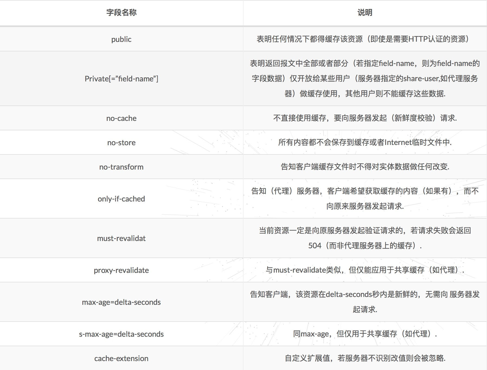

浏览器缓存
强缓存
释义: 客户端第一次问服务器要某个资源时，服务器丢还给客户端所请求的这个资源同时，告诉客户端将这个资源保存在本地，并且在未来的某个时点之前如果还需要这个资源，直接从本地获取就行了，不用向服务器请求.这种方式缓存下来的资源称为强缓存.
Expires & Cache-Control:max-age
- Expires:
该字段是http1.0时的规范，值为一个绝对时间的GMT格式的时间字符串，代表缓存资源的过期时间，在这个时点之前，即命中缓存. Cache-Control:
该字段是http1.0时的规范，值为一个绝对时间的GMT格式的时间字符串，代表缓存资源的过期时间，在这个时点之前，即命中缓存.
参数:no-cache: 如果请求头部包含no-cache指令，表示客户端不接收缓存过的响应.中间缓存服务器必须将请求转发给给源服务器. 浏览器强制刷新(window下ctrl+F5)就是这个原理，所以的请求都设置no-cacheno-store: 暗示请求和响应包含机密信息，不能进行缓存.
区分: no-store才是真正的不缓存max-age: 该指令用来标识缓存资源的最大有效期. 如果max-age=0，就会向源服务器发送请求进行缓存资源新鲜度的验证.浏览器普通刷新F5“Cache-Control”:” cache-directive”*作为请求首部时，cache-directive 的可选值有:
“Cache-Control”:” cache-directive”*作为响应首部时，cache-directive 的可选值有:

在请求头中max-age=0与no-cache的区别？
返回的状态来看：no-cache都是200，而max-age可能是304（如果浏览器有缓存）. 请求参数：max-age请求头一般会携带If-Modified-Since或If-None-Match字段进行新鲜度验证，而no-cache不会携带. F5刷新是max-age=0来实现，而强制刷新(Ctrl+F5)是通过no-cache实现.
异同:
Expires是HTTP 1.0+的首部，用来指定一个绝对的过期日期，依赖客户端时间设置的准确性,缓存时间是相对服务器上的时间而言的.
而max-age是HTTP/1.1的Cache-Control的一个字段，用来指定文档的最大使用时间.
协商缓存
释义: 客户端第一次问服务器要某个资源时，服务器丢还给客户端所请求的这个资源同时，将该资源的一些信息（文件摘要、或者最后修改时间）也返回给客户端，告诉客户端将这个资源缓存在本地.当客户端下一次需要这个资源时，将请求以及相关信息（文件摘要、或者最后修改时间）一并发送给服务器，由服务器来判断客户端缓存的资源是否需要更新：如不需要更新，就直接告诉客户端获取本地缓存资源；如需要更新，则将最新的资源连同相应的信息一并返回给客户端.
Last-Modified & If-Modified-Since & Etag & If-None-Match
- Last-Modidied & If-Modified-Since:
Last-Modified: 为实体首部字段，值为资源最后更新时间，随服务器response返回.If-Modified-Since: 为请求首部字段，通过比较两个时间来判断资源在两次请求期间是否有过修改，如果没有修改，则命中协商缓存，浏览器从缓存中获取资源；如果有过修改，则服务器返回资源，同时返回新的Last-Modified时间.
- Etag & If-None-Match:
Etag: 为相应头部字段，表示资源内容的唯一标识，随服务器response返回.If-None-Match: 为请求头部字段，服务器通过比较请求头部的If-None-Match与当前资源的ETag是否一致来判断资源是否在两次请求之间有过修改，如果没有修改，则命中协商缓存，浏览器从缓存中获取资源；如果有过修改，则服务器返回资源，同时返回新的ETag.
- 不能缓存的请求
- HTTP信息头中包含Cache-Control:no-cache，pragma:no-cache（HTTP1.0），或Cache-Control:max-age=0等告诉浏览器不用缓存的请求. Cache-Control: no-cache：这个很容易让人产生误解，使人误以为是响应不被缓存.实际上Cache-Control: no-cache是会被缓存的，只不过每次在向客户端（浏览器）提供响应数据时，缓存都要向服务器评估缓存响应的有效性
- 需要根据Cookie，认证信息等决定输入内容的动态请求是不能被缓存的
- 经过HTTPS安全加密的请求（有人也经过测试发现，ie其实在头部加入Cache-Control：max-age信息，firefox在头部加入Cache-Control:Public之后，能够对HTTPS的资源进行缓存，参考《HTTPS的七个误解》）
- POST请求无法被缓存
- HTTP响应头中不包含Last-Modified/Etag，也不包含Cache-Control/Expires的请求无法被缓存
- 浏览器缓存机制示意图